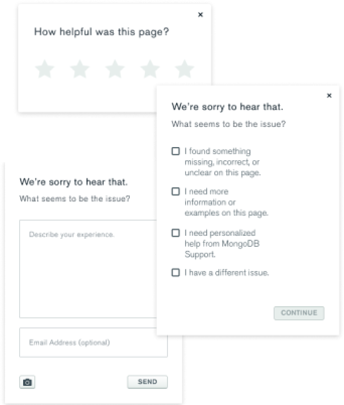

I spent the summer of 2021 as a Product Design Intern at MongoDB in Manhattan, New York. I was a part of the education team where I focused on creating reliable and effective experiences on our documentation, which serves as an instruction manual to all of our products. During my time here my primary project was to redesign the feedback widget by balancing delightful and functional UX with effective data collection to drive business decisions. This is important because the feedback widget serves as the heartbeat of our docs pages and the quality of feedback we receive directly impacts our docs content.
Before I jumped into the project, I did competitive analysis of 12 different companies and their feedback
widgets. I also read some of the user feedback we had on the widget. A lot of pain points came from users
having the impression that they would not be able to give specific feedback. This was because the initial
screen of the widget was the star rating system, which asked the user to rate how helpful a page is from a
scale of 1-5 but did not indicate to the user that there would be an opportunity for them to further expand on
their thoughts.
Next, I conducted user interviews with both our docs users and our internal docs
team, who use the feedback widget responses to improve our page content. For the docs users, I wanted to
evaluate how helpful certain features were to see what could be omitted or improved. As for the docs team, I
wanted to figure out what features gave them the most helpful data.
From my previously gathered
feedback and user interviews, I was able to graph on an affinity map the importance of each feature from the
perspectives of our users and docs writers.
Let’s look at what I found:
After evaluating the affinity map, I realized that the two primary users of the feedback widget had conflicting goals. For example, our technical writers really like the star rating screen because it allows them to view how a page is doing on a quantitative scale, but our users don’t like it because it doesn’t add value to them in the submission journey. It was my goal to create a design that would solve the needs of both users.
With these takeaways in mind, I advocated for a solution that replaced the star rating system with a binary
rating system, and to omit the checklist categories screen completely. This was because studies have shown
that with likert systems, users tend to rate higher than they actually feel, causing inflation ratings. This
is also due to the fact that when asked to rate from a scale of 1-5, users have a hard time differentiating
what makes a product “good” versus “great”. A binary system has almost no overhead for users.
As
for omitting the checklist categories, not only did users tend to bounce on that screen, but the data
collected from the input was insignificant to our docs team. I also recommended a redesign of the screenshot
function, since users noted that it was a feature that was useful to them but because of the functionality of
it (the current tool took a picture of the entire page), the feature added no value to our docs team. If users
could pin point where a certain typo or bug is in a more specific manner by selecting certain elements on the
page, this would benefit both users of the widget by reducing time spent submitting feedback since users would
not have to elaborate on the section they are referring to in the text input and our team could easily take
action with less effort. I created a pro/con list of each feature and presented them with designs to our
stakeholders.
Our main objective was to simplify the feedback input flow and to encourage users to provide context for their
feedback. With many rounds of user testings and revisions, I was able to iterate to alleviate major pain
points and here is what I had delivered and shipped!
Here are a few final screens:
Sandy Nguyen
(lead designer),
+ Corry Root (copywriter)
+ The docs team
The feedback widget is currently being implemented, and will be validated afterwards with KPIs I’ve created. All in all, the docs team was very satisfied with the new design and I had a very fruitful time working with the education design team.
I’m happy to share the full prototype upon request!
The star rating system added no value to our users, and checklist categories required too much overhead thought. Users just wanted to get to the textbox input.
The docs team rarely used the feedback widget since a lot of the feedback submitted had no context. The feedback widget did not encourage users to give actionable feedback.
The current feedback widget journey was too long. All users interviewed expressed they would prefer a shorter feedback form.

Next Project - Post-Purchase Experience >

After a couple rounds of design reviews and stakeholder meetings, I narrowed down on two designs and conducted user testing. I synthesized the research findings and moved forward with the design that had the best results and iterated again based on the feedback our users expressed during testing. Corry Root, a senior technical writer at MongoDB then collaborated with me on the final copywriting and the rest is history!
Easy to scan via icons, less overhead thought
Use of ellipses to indicate to the user how many
steps are left in the journey
Design allows users to relate directly to words
rather than stars
Binary system for easier page improvements
and more accurate ratings
Optimized copywriting to encourage actionable
feedback
Shortened journey to textbox input screen
Allows for elements to be selected on a page for specific context
Users felt the design was very intuitive and easy to use. Features were evaluated for effectiveness.
The copywriting and built in screenshot function tool encourages users to give specific feedback.
The design indicates to the user how many steps the journey will be, which has also been shortened.
goals
Receive feedback that is actionable
Quickly and easily finish their objective
Know that their feedback is making an impact
Implement a system that allows the team to see how a page is doing on a qualitative scale
Easily make page improvements with minimal effort
What I needed to design

Improvements included: Shortening the feedback widget journey for users and optimizing data collection for our documentation team.
